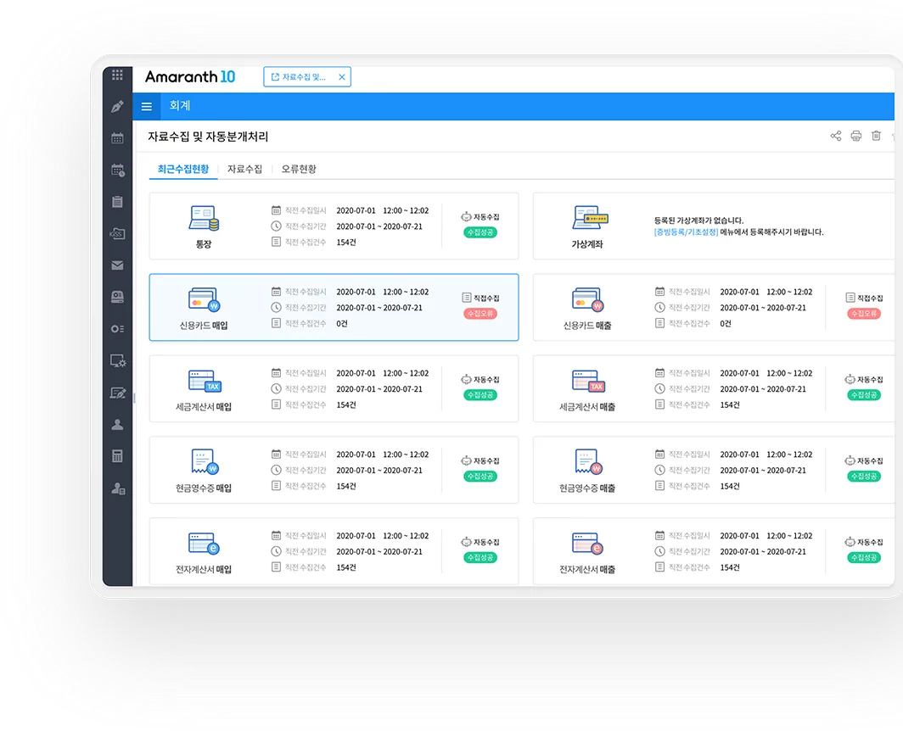
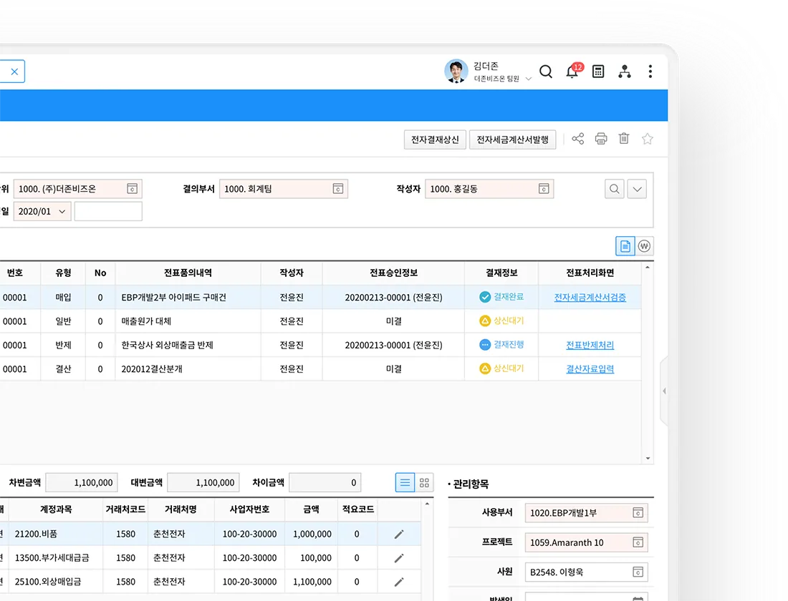
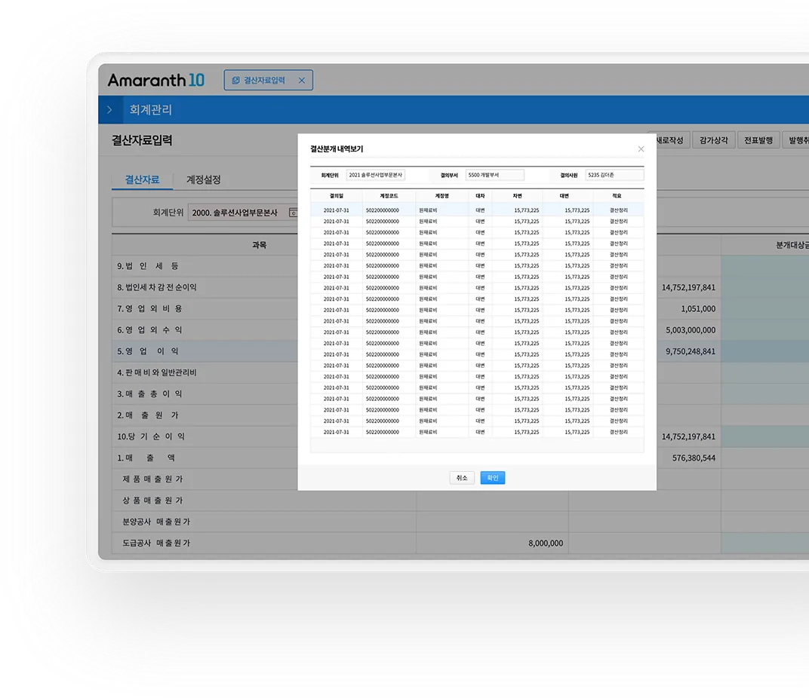
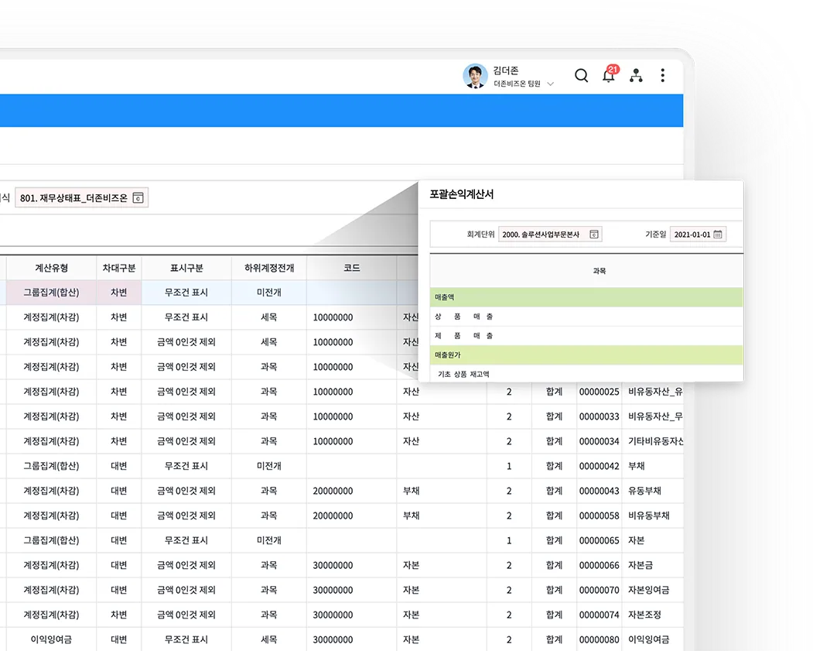
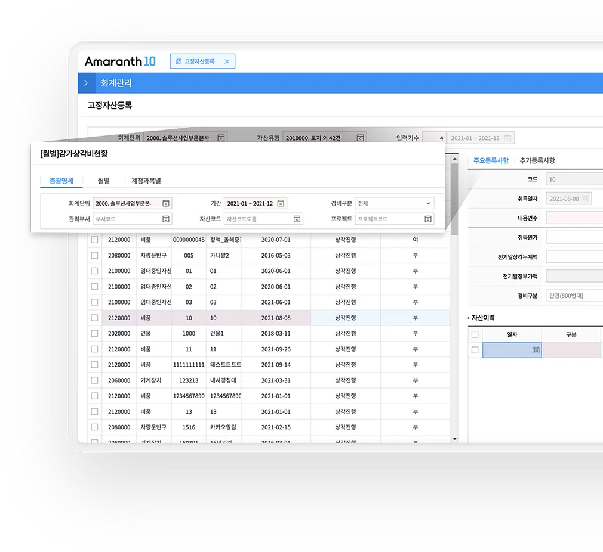
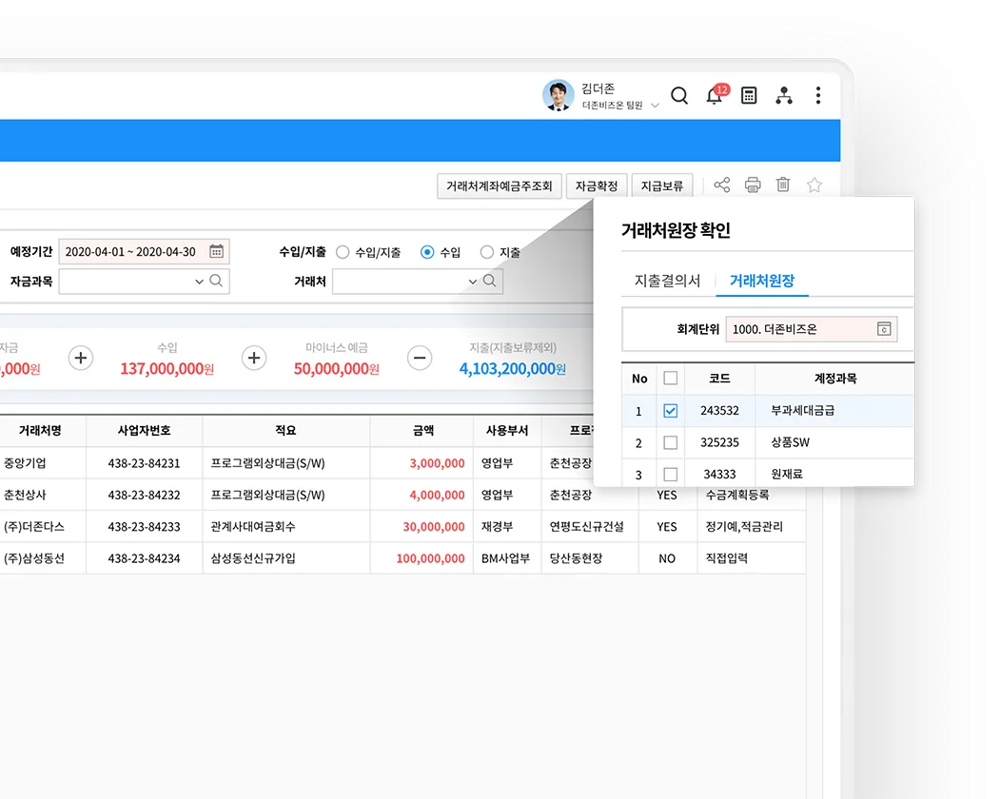
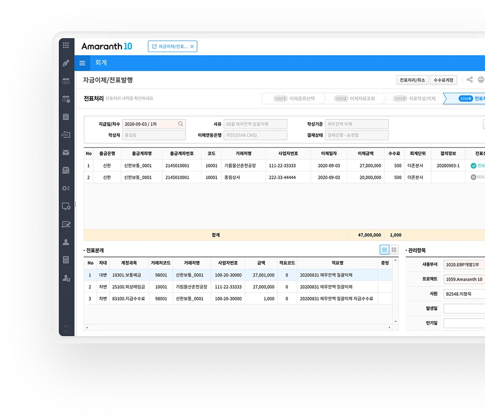
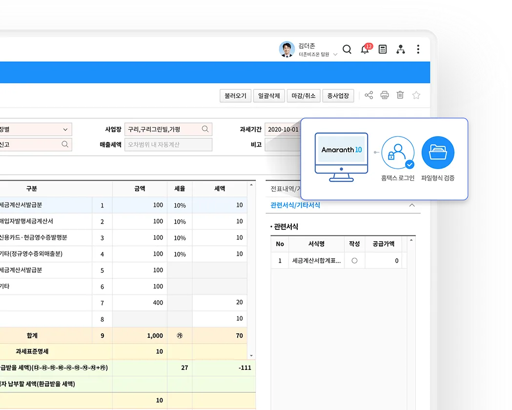
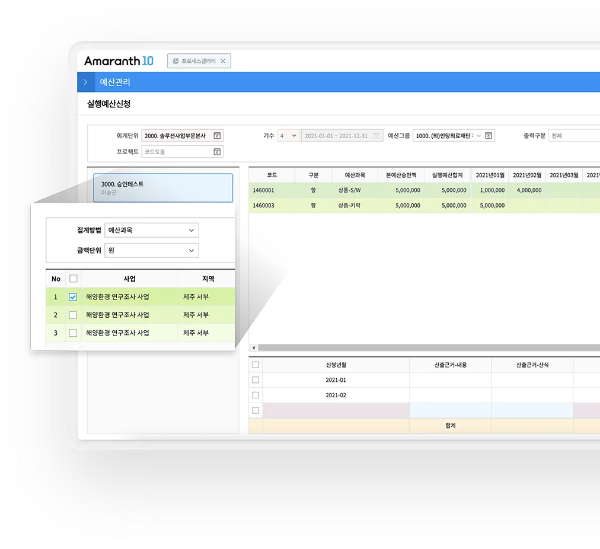

자동으로 수집된
기관별 증빙 데이터의
자동 분개
회계담당자는 수집된 자료와 분개를
확인만 하고 바로 전표 처리를
진행할 수 있습니다.

제품 화면·자료 보기
제품 화면·자료 보기

체계적인 구조로
원천 데이터까지
추적 가능한 전표관리
전표가 발생된 원천 데이터 추적 외에도
다양한 관리항목들을 통해 더욱 쉽고 편리한
사용이 가능해집니다.

제품 화면·자료 보기

자동결산 기능과
관리항목별로 작성된
주요 재무제표 지원
임직원이 직접 매출(세금)계산서를 발행하고
수금 계획을 수립하면 자금수금계획에 자동 반영되는
편의성을 경험해 보세요.

제품 화면·자료 보기

의료법인, 금융업,
보험업 등 직접 제작하는
다양한 업종별 재무제표
재무제표를 원하는 형태로 만들 수 있어
관리 목적에 따라 다양한 재무제표 제작이
가능합니다.

제품 화면·자료 보기

유/무형자산
상각비 계산과
결산 지원은 자동으로
고정자산 등록과 동시에 상각비를 계산하고
기말 결산 시 감가상각비를 자동 분개하여
결산 업무를 더욱 효율적으로 지원합니다.

제품 화면·자료 보기

한눈에 파악하고 예측하는
기업의 가용자금 흐름과
자금손익
기업의 모든 자금 업무를 하나의 시스템으로 통합하여
정확하게 자금흐름을 파악하고 의사결정에 필요한
지표를 제공합니다.
제품 화면·자료 보기
제품 화면·자료 보기

한 곳에서
일괄 관리할 수 있는
통합 금융자금관리
여러 금융 기관의 금융정보를 연계하여
한 번에 확인 및 전표처리해주는
더존 금융서비스입니다.
제품 화면·자료 보기

신고서 작성, 검증에서
전자신고까지 자동화시킨
Amaranth 10
홈택스에 접속하지 않아도 클릭 한 번으로
전자신고 파일 자동 검증 및 제출이 가능하여
업무 프로세스 단계를 획기적으로 단축시켰습니다.
제품 화면·자료 보기
제품 화면·자료 보기

예산과목 기준으로
프로젝트/부서별
예산편성 관리
예산과목을 기준으로
프로젝트/부서별 통제
편성기능을 지원합니다.
제품 화면·자료 보기
